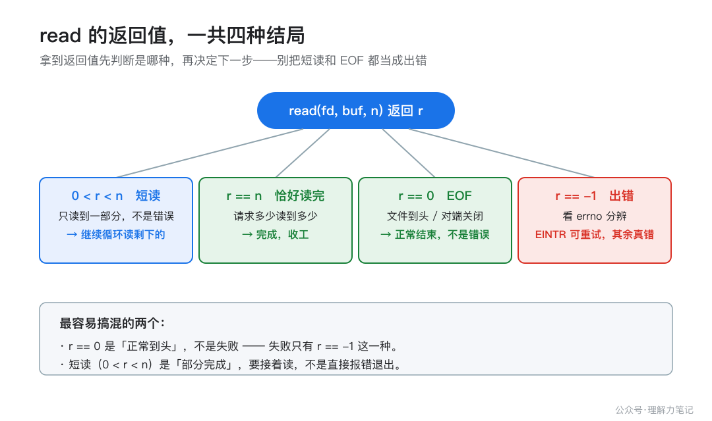

read 只读了一半，不是你的代码错了
你一定写过（或抄过）这样的代码：
char buf[4096];
ssize_t n = read(fd, buf, sizeof buf);
/* 然后理所当然地认为 buf 里装满了 4096 字节 */
如果 read 返回的不是 4096，而是 5，你会不会第一反应是「出 bug 了」？其实没有。read 和 write 只承诺「最多」读/写 N 字节，实际返回多少是内核说了算，返回得少不一定是错。
结论：read/write 返回的字节数少于请求，叫短读/短写（short read / short write），这是被允许的正常行为，不是 bug。read 返回 0 表示读到文件尾（EOF），返回 -1 才是出错（其中 EINTR 是「被信号打断」，可以重试）。正确的写法是把它们放进一个循环，累计已处理的字节数，直到「读满 / 读到 EOF / 遇到真错误」三者之一才停。
下面用三个能自己跑的小实验把这件事验证清楚，再讲它背后为什么这样设计、工程上怎么写才对。
这篇文章怎么读？
无论你为什么点进来，都能各取所需——只解决手头问题，看第一章就够；想彻底搞懂，再往下读。
| 你是谁 | 看哪一章 | 会得到什么 |
|---|
| 搜索者 / 被推荐者 | 第一章 · 先解决问题 | 最快的答案（知其然） |
| 学习者 | 第二章 · 机制解释 | 底层的来龙去脉（知其所以然） |
| 编程者 | 第三章 · 工程使用 | 正确、能直接用的写法 |
| 求职者 | 第四章 · 面试提炼 | 会怎么问、怎么答 |
第一章 · 先解决问题：短读短写是正常现象，用循环读完
先看一个最短的复现：用一个管道，子进程只写 5 个字节，父进程请求读 4096 字节，看它返回多少。
最小实验：请求读 4096，只读到 5
/*
* short_read.c — 证明 read 会「短读」：请求读 N 字节，实际可能只返回一部分。
*
* 方法：创建一个管道，父进程写一段固定长度（比如 5 字节）的内容，
* 子进程一次 read 请求 4096 字节，观察返回 5 而不是 4096。
*/
#define _POSIX_C_SOURCE 200809L
#include <unistd.h>
#include <sys/wait.h>
#include <string.h>
#include <errno.h>
static int put_uint(char *dst, long v) {
char tmp[24];
int i = 0, j;
if (v == 0) { dst[0] = '0'; return 1; }
while (v > 0) { tmp[i++] = (char)('0' + (v % 10)); v /= 10; }
for (j = 0; j < i; j++) dst[j] = tmp[i - 1 - j];
return i;
}
static void say(const char *s) {
write(1, s, strlen(s));
}
int main(void) {
int fds[2];
if (pipe(fds) < 0) {
say("pipe failed\n");
return 1;
}
pid_t pid = fork();
if (pid < 0) {
say("fork failed\n");
return 1;
}
if (pid == 0) {
/* 子进程：只写 5 字节，然后退出 */
close(fds[0]);
const char *msg = "hello";
ssize_t w = write(fds[1], msg, 5);
(void)w;
close(fds[1]);
return 0;
}
/* 父进程：请求读 4096 字节 */
close(fds[1]);
char buf[4096];
char line[64];
int n = 0;
ssize_t r = read(fds[0], buf, sizeof buf);
const char *p1 = "请求 read 4096 字节，实际返回 ";
memcpy(line + n, p1, strlen(p1)); n += (int)strlen(p1);
n += put_uint(line + n, (long)r);
line[n++] = '\n';
write(1, line, (size_t)n);
close(fds[0]);
waitpid(pid, NULL, 0);
return 0;
}
（代码里用 write 手工拼输出而不是 printf，是为了让整个程序只依赖系统调用，输出不被标准库缓冲干扰。）
编译与运行
cc -std=c17 -Wall -Wextra -Wpedantic -Wconversion -Wshadow -O0 -g short_read.c -o short_read
./short_read
实际结果
请求 read 4096 字节，实际返回 5
结果说明
请求读 4096，read 返回了 5。这不是出错——管道里此刻就只有 5 字节，内核把这 5 字节给了你就立刻返回，不会傻等剩下的 4091 字节。「有多少给多少」，这就是短读。
短写也一样。把管道写满后再腾出 100 字节，此时请求写 65536 字节，write 只写进 100：
pipe filled: 65536 bytes
drained 100 bytes to make room
write #after-drain: asked 65536 bytes, wrote 100 bytes (SHORT WRITE)
一个很容易错的判断：别把「返回值小于请求值」当成失败。失败的唯一标志是返回 -1。短读短写时返回值是正的，程序必须把它当成「部分完成」继续处理，而不是直接当错误退出。
第二章 · 从操作系统视角理解：为什么内核「不肯一次给够」
为什么 read/write 会「不肯一次给够」？因为它们是系统调用，返回值由内核此刻的实际处理能力决定，而不是由你请求的字节数决定。
涉及的系统对象
- 内核缓冲区（页高速缓存 / socket 缓冲 / 管道缓冲）：read 读的数据来自这里，write 写的数据先落在这里。管道、socket 的缓冲区大小有限；普通文件走页高速缓存，受内存与内核回写策略影响。
- 文件偏移量：每次成功的 read/write 都会把偏移量往前推进「实际处理」的字节数，而不是「请求」的字节数。
- 信号：阻塞中的系统调用被信号打断，是 EINTR 的来源。
调用路径与状态变化
read(fd, buf, n) 这个调用，内核做的事大致是：找到 fd 对应的打开文件描述 → 看内核缓冲区里有没有数据 → 有多少就拷多少到 buf，最多 n 字节 → 推进偏移量 → 返回实际拷贝的字节数。
关键在「有多少就拷多少」。对管道/socket/终端这些流型描述符，数据是「边到边读」的：对端写了 5 字节，缓冲区里就 5 字节，read 拿到的自然就是 5。你请求 4096，内核不会因为你的请求就阻塞到凑齐 4096——那会让「已经到的数据」白白等着，也让「先到先处理」的常见需求没法实现。
write 同理：缓冲区只剩 100 字节空位时，内核先写进 100 字节就返回 100，剩下的你自己再写。
返回值、错误和边界
read 的返回值一共四种情况，必须分清：
| 返回值 |
含义 |
怎么办 |
> 0 但 < n |
短读，只读了一部分 |
继续循环读剩下的 |
== n |
恰好读满请求的量 |
完成 |
== 0 |
EOF：文件到头，或对端关闭 |
正常结束，不是错误 |
== -1 |
出错 |
看 errno |
== -1 时还要再分一层：errno == EINTR 表示「读到任何数据之前被信号打断」，这是可重试的；其他 errno 是真正的错误，一般不该盲目重试。
有两个边界特别容易混淆：
-
普通磁盘文件的 read，在 Linux 上「要么读满、要么返回 0」——文件有固定长度，读到头就是 0，不存在「只读一半」的中间态。但这是 Linux 的实现行为，不是 POSIX 的保证。POSIX 只说 read 可能短读。所以可移植代码不能依赖「普通文件一定读满」这个假设，统一用循环最稳。
-
EINTR 在不同系统上的行为不一样。 POSIX 允许实现「自动重启」被信号打断的慢系统调用；Linux 默认不自动重启（除非装信号处理器时设了 SA_RESTART），所以 Linux 上你必须自己处理 EINTR。结论：写可移植代码，就显式处理 EINTR，别赌系统帮你重启。
EINTR 不是嘴上说说，用一个小实验验证：让子进程阻塞 read 一个没人写的管道，父进程发个 SIGUSR1 把它打断。子进程先装一个空的信号处理器（handler 函数体为空，只为了不让 SIGUSR1 把进程杀掉——SIGUSR1 的默认动作是终止进程，不装处理器的话，子进程根本活不到检查 errno 那一行），然后发起 read：
struct sigaction sa;
memset(&sa, 0, sizeof sa);
sa.sa_handler = handler;
sigemptyset(&sa.sa_mask);
/* 故意不设 SA_RESTART：这样阻塞中的 read 才会被打断返回 EINTR */
sigaction(SIGUSR1, &sa, NULL);
char c;
ssize_t r = read(fds[0], &c, 1);
if (r < 0) {
if (errno == EINTR)
say("child: read interrupted, returned -1, errno == EINTR\n");
else
say("child: read failed with non-EINTR errno\n");
}
装了处理器但不设 SA_RESTART，被打断的 read 就会返回 -1。实际输出：
child: read interrupted, returned -1, errno == EINTR

第三章 · 工程上怎么使用：把 read/write 包成「循环 + 累计」
理解了「短读短写是正常的」，工程上的结论就一句话：任何一次 read/write 都不能假设它一定处理了全部请求，必须循环处理。
接口选择
- 只读/写一次就行的场景（比如读一个固定长度的小头、写一个状态字节），短读短写的概率低，但严谨起见仍建议循环或至少检查返回值。
- 需要「一次保证读完/写满」时，自己写
read_all/write_all 包装函数，别裸调 read/write。
- 对「在指定位置读写」的需求，POSIX 提供了
pread/pwrite（带偏移量参数，不移动文件偏移），但它们同样会短读短写，循环这一层省不掉。
错误处理
完整读的正确写法，三个终止条件一个都不能漏：
/* 完整读：循环直到读满 n 字节、读到 EOF、或出错 */
static ssize_t read_all(int fd, void *buf, size_t n) {
char *p = buf;
size_t done = 0;
while (done < n) {
ssize_t r = read(fd, p + done, n - done);
if (r < 0) {
if (errno == EINTR)
continue; /* 被信号打断，重试 */
return -1; /* 真正的错误 */
}
if (r == 0)
break; /* EOF：读到头了，返回已读到的部分 */
done += (size_t)r;
}
return (ssize_t)done;
}
三个终止条件对应：done == n（读满，循环条件自然退出）、r == 0（EOF）、r < 0 && errno != EINTR（真错误）。EINTR 单独 continue，不把它算进错误。
资源生命周期
read_all 里每次 read 用的是同一个 fd，缓冲区指针 p + done 随累计推进，循环本身不新增任何需要清理的资源；fd 的开关仍归调用方管。- 调用方拿到的返回值要区分：返回
n 是读满，返回 0..n-1 是提前 EOF（读到多少算多少），返回 -1 才是失败。别把「提前 EOF」当失败，很多协议/格式允许数据比预期短。
可复用写法
完整的 write_all 与 read_all 对称：
/* 完整写：循环直到写满 n 字节，或出错 */
static ssize_t write_all(int fd, const void *buf, size_t n) {
const char *p = buf;
size_t done = 0;
while (done < n) {
ssize_t w = write(fd, p + done, n - done);
if (w < 0) {
if (errno == EINTR)
continue; /* 被信号打断，重试 */
return -1; /* 真正的错误 */
}
done += (size_t)w; /* 防短写：只累计实际写出的 */
}
return (ssize_t)done;
}
write 和 read 有一点不同：请求字节数非 0 时，write 正常不会返回 0，所以循环里不用专门判 0；但它照样会短写，done += w（而不是 done += n）就是为了这个。
两个函数合在一起验证过：read_all 从文件读 10 字节，write_all 写进另一个文件，再读回来逐字节比对，完全一致：
read_all got 10 bytes: [abcdefghij]
copy verified: write_all wrote all 10 bytes
第四章 · 面试提炼
简短回答
「read/write 返回的字节数少于请求是短读/短写，这是正常行为不是错误。read 返回 0 是 EOF，返回 -1 是出错，其中 EINTR 表示被信号打断可以重试。正确写法是循环累计，直到读满、读到 EOF 或遇到真错误。」
常见追问
- read 返回 0 和返回 -1 有什么区别？ 0 是「文件到头 / 对端关闭」，是正常结束；-1 是「出错」，具体看 errno，EINTR 可重试，其他多半是硬错误。
- 为什么 read 会短读？ 因为对管道/socket/终端这些流，数据是边到边读的，内核「有多少给多少」，不会为了凑齐你请求的字节数而阻塞。
- 普通文件的 read 会短读吗？ Linux 上普通文件要么读满要么返回 0，不会出现中间态；但这是实现行为不是标准保证，可移植代码仍该用循环。
容易答错的地方
- 说「read 返回 0 是读失败」——错，0 是 EOF，是正常结束。
- 说「read 返回值小于请求值就是 bug」——错，短读短写是允许的。
- 说「EINTR 是严重错误、直接退出」——错，EINTR 是「被信号打断」，重试即可。
- 说「write 返回成功就落盘了」——错，write 成功只代表数据进了内核缓冲区，是否落盘是 fsync 的事。
参考资料
按支撑程度排序：
本文为公众号「理解力笔记」原创。转载请联系作者，并保留出处。